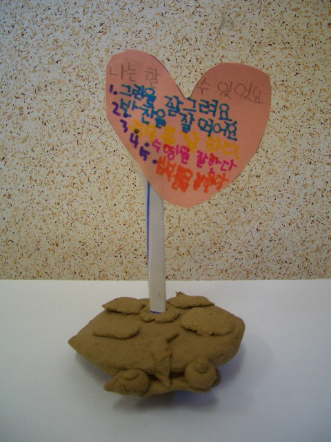

특수교육에서 개별화 교육은 다양한 학습 능력과 요구에 부응하기 위해 개별 학생을 중심으로 한 맞춤형 교육 접근 방식을 의미한다. 이러한 접근은 일반 교육 환경에서 학습하는 학생들과는 다르게, 학습 어려움, 발달 지체, 장애, 학습 장애 등 특별한 교육적 요구를 가진 학생들을 위한 것이다.
개별화교육 계획이라는 개념과 용어는 나라마다 상이하지만, 우리나라의 경우는 ‘개별화교육’, ‘개별화교육계획’, ‘개별화교육 프로그램’, ‘개별화 지도계획’, ‘개별화 지도 프로그램‘등 다양하게 사용되고 있다. 반면, 미국의 경우 IEP는 (Individualized Education Program)의 약칭으로 사용되고 있으나, 영국에서는 (Individualized Education Plan)으로 사용되고 있고, 일본에서는 우리나라 말로 해석하면 ‘개별화 지도계획’으로 사용되고 있다. 이와 같이 약칭은 조금씩 다르지만, 우리나라의 경우는 개별화교육의 기본 이념이나 주요 형식은 주로 미국의 것을 도입한 것이라 볼 수 있다.
Aseson & Weintraub(1977)는 개별화교육계획에 대해 세 가지 핵심 단어로 약술하고 있는데 즉,‘개별화’는 한 학생의 교육적 요구를 의미하며, ‘교육’은 특수교육 및 관련 서비스를 의미하고, ‘계획’은 학생에게 실제로 무엇을 제공할 것인가에 대한 진술을 의미하는 것으로 설명하고 있다.
Butt와 Scott(1994)는 개별화교육계획이 특수교육 서비스를 받는 발달지체 학생을 위한 하나의 법적 요구 조건으로서 장애가 있고 특수교육적 서비스가 필요하다고 인정된 학생을 위하여 개별적으로 마련되어야 하는 ‘공식 교육 계획서’라 하였다.이러한 개별화교육계획은 특수교육 분야에서 반드시 추구해 나가야 할 철학이며 과제이지만, 개개인의 다양한 신체적, 정서적, 사회적 개인차와 발달 과정에 따른 학생의 독특한 문제를 간과해서는 안 된다. 특히, 현재의 환경 및 사회적 이상이나 이념, 우리 사회가 지닌 문제에 대해서도 고려해야 한다.

개별화 교육은 다음과 같은 주요 특징을 가진다.
1) 개별화된 학습 목표
개별화 교육은 각 학생의 능력, 수준, 특성 및 학습 요구를 고려하여 개별적인 학습 목표를 설정한다. 이는 학생이 최대한 자신의 능력을 개발하고 성취감을 느낄 수 있도록 돕는 중요한 요소이다.
2) 맞춤형 교육 자료와 방법
학생 개개인의 학습 스타일과 요구사항에 맞추어 교육 자료와 교육 방법이 선택이다. 이는 학생이 효과적으로 학습할 수 있도록 돕는 데 중요하다.
3) 다양한 지원 서비스
특수교육에서는 학습 장애나 장애의 종류에 따라 다양한 지원 서비스가 제공된다. 이러한 서비스는 개별화된 교육 계획을 구현하는 데 필요한 것으로, 작업치료, 언어치료, 심리치료, 물리치료와 같은 서비스가 포함될 수 있다.
4) 협력과 평가
학교와 학부모, 특수교사, 교육 전문가 간의 협력이 중요하다. 또한 학생의 학습 진행을 정기적으로 평가하여 개별화 교육 계획을 조정하고 개선하는 데 사용된다.
5) 학생 중심 접근
개별화 교육은 학생의 요구와 성장을 중심으로 한다. 학생이 주체적으로 학습에 참여하고 자신의 능력을 개발하도록 도와주도록 한다.
6) 학습 환경의 다양성
특수교육에서는 다양한 학습 환경을 제공함으로써 학생들이 자신에게 가장 적합한 방식으로 학습할 수 있도록 한다. 이는 학교 내의 다양한 교육 프로그램과 수업 형태를 포함해야 한다.
요약하면, 특수교육에서의 개별화 교육은 학생 개개인의 특수한 교육 요구를 고려하여 맞춤형 교육을 제공하는 접근 방식으로, 학생의 능력과 성장을 최대한 발휘하도록 지원하는 것이다. 이는 학습 장애나 특수 교육적인 요구를 가진 학생들이 학교에서 성공적으로 학습할 수 있도록 돕는 중요한 교육 철학이다.
참고문헌
교육부(2017), 개별화교육 운영지침 교육부
남혜진(2009), 장애아전담 보육시설 교사의 개별화교육계획 수행능력과 실행인식수준, 대구대학교 대학원.
최진(2020). 개별화 교육’ 개념의 확장적 의미 탐색 : 개인 형성과 교육적 공간 간의 관계를 중심으로. 열린교육연구. 28(3), 139-161.
한현지(2020). 특수교육학개론, 정민사.
2023.10.13 - [특수장애] - 지적장애 의의 및 정의 - 정서장애와 행동장애 동반 가능성
지적장애 의의 및 정의 - 정서장애와 행동장애 동반 가능성
지적장애의 의의 지지적장애는 개인의 지능 및 적응 행동 기능이 평균보다 현저히 낮아 일상생활에서 여러 문제를 경험하는 상태를 말한다. 적장애는 생물학적, 환경적 요인으로 인해 개발 초
think-sis.co.kr